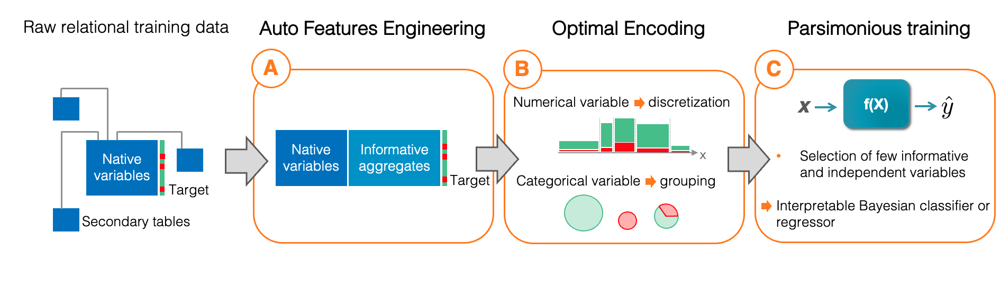
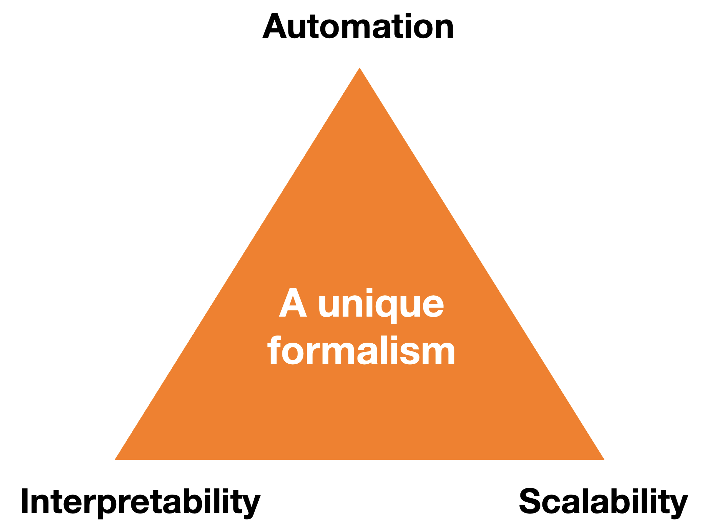
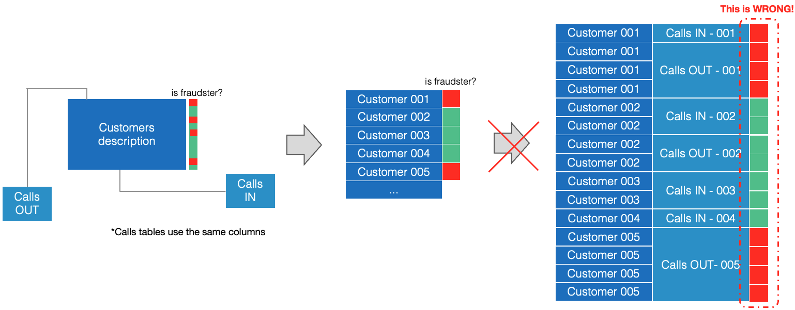
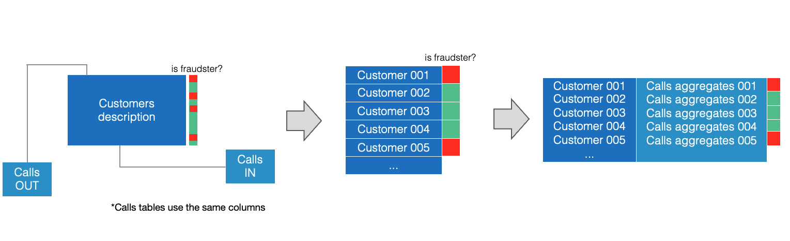
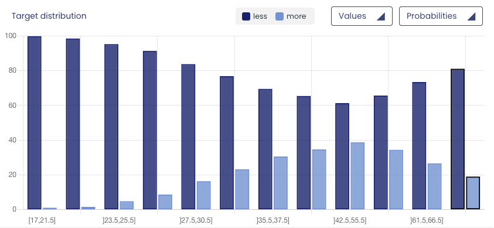
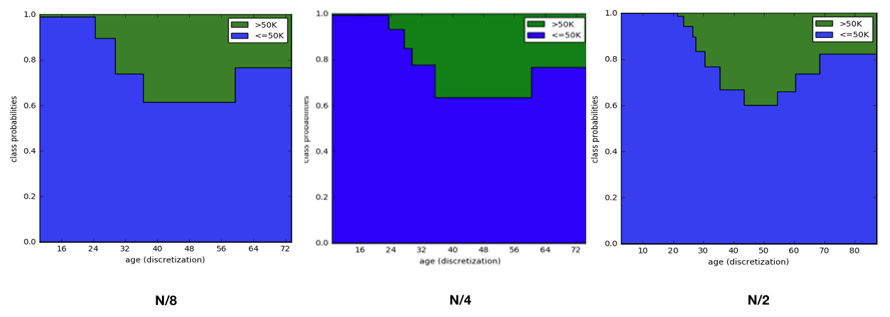
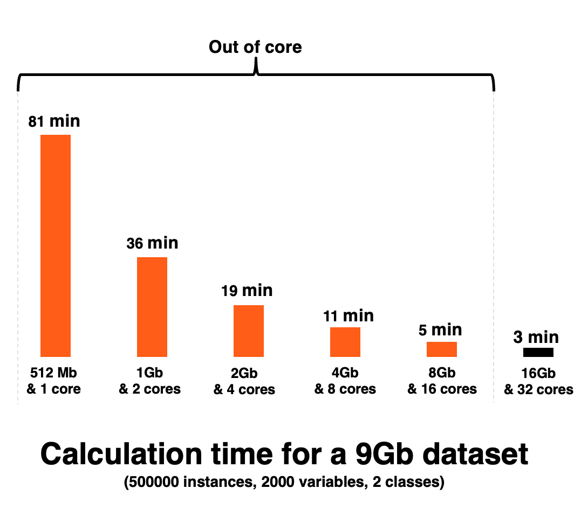
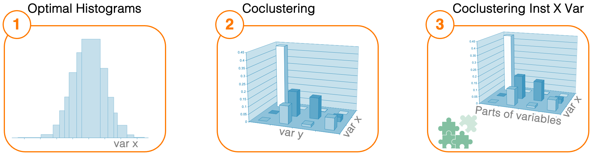

What makes Khiops different
Khiops is an end-to-end solution for Automated Machine Learning (AutoML), natively handling many time-consuming Data Science tasks—not through brute-force automation, but through a rigorous formalism that makes many manual steps unnecessary. These include feature engineering (A), data cleaning and encoding (B), and the training of parsimonious models (C).

The Auto-ML capability allows Khiops to expertly process tabular data, regardless of whether it comes in single-table format, or in the form of relational data sets, including those with complex "snowflake" schemas. This becomes a distinctive asset in various situations, particularly when addressing use-cases with multiple records per statistical individual (such as calls, transactions, or production logs). Khiops handles these scenarios seamlessly and automatically, making it an invaluable tool for extracting rich insights from complex datasets.
The distinctiveness of Khiops lies in its departure from typical AutoML solutions that rely on heavy computation and exhaustive hyperparameter tuning. Instead, Khiops employs an original formalism called MODL (which is hyperparameter-free) that naturally eliminates the need for manual steps such as data cleaning, variable encoding, and handcrafted feature engineering. This principled approach allows Khiops to automate the entire ML pipeline in a robust and efficient manner, without sacrificing interpretability. By design, it produces high-performance, parsimonious models and achieves scalability without brute force, setting a new standard for structured data learning.

Advanced Automation
Automation in Khiops is not based on brute-force exploration or trial-and-error heuristics. Instead, it emerges from a formal, principled methodology that reduces or eliminates preprocessing steps altogether. Khiops significantly enhances the productivity of data scientists by making many traditionally time-intensive tasks unnecessary through formal automation. Key benefits include:
- Automated Data Cleaning: Khiops alleviates the need for manual data cleaning, and the training of models remains unaffected by outliers. It minimizes the need for intricate preprocessing and outlier detection, saving valuable time.
- Native Processing of Variables: Khiops adeptly manages all data types without requiring manual encoding. Categorical variables are naturally grouped, and numerical variables are cleverly divided into intervals, making it easier for the models to find patterns and relationships.
- Auto Feature Engineering: Khiops automatically calculates and selects the summarizing 'features' or 'aggregates' from temporal and relational datasets (in a unique way thanks to the MODL approach), providing a concise, informative snapshot that can be readily used for modeling. This saves considerable time and effort while ensuring that essential data patterns are not overlooked.
- Efficient Variable Selection Algorithms: Khiops employs two sophisticated variable selection techniques. Firstly, during the optimal encoding phase (B), it weeds out variables that lack correlation with the target using Compression Gain. Secondly, during the parsimonious learning step (C), it handpicks a compact subset of the most informative and mutually independent variables.
The remainder of the section introduces the auto-features engineering step.
This section only introduces the concept. For technical details, please refer to the  Auto features engineering section.
Auto features engineering section.
Relational data structures are common in many professional environments, encompassing data on users (e.g., call or payment logs) or production data where each step generates its records. In such contexts, we deal with a primary table of statistical individuals (potentially the targets for supervised learning) and secondary tables that contain the related logs.
Mining insights from these datasets is definitely more intricate than working with straightforward, single-table datasets often utilized in tutorials. The crux of this complexity lies in the fact that each individual can be linked to multiple records in the secondary tables, and it's not feasible to uniformly assign these records to the individual class. In other words, handling relational data for predictive modeling calls for a specialized approach, which is where Khiops comes in.
Consider a brief example: the goal is to identify call spammers using call log data. The primary table contains the list of customers along with the target attribute (is a fraudster or not). Complementing this, secondary tables detail 'in' and 'out' calls for each customer, some having more than thousands of rows.

In that example, it's essential to acknowledge that a single call doesn't define an individual as a fraudster - it is the overall pattern of their calls that can lead to this classification (e.g., a high volume of out calls but no in calls or consistently different recipients).
It is not feasible, or indeed correct, to map the customer's target outcome to each of their calls (rows), then attempt to train a model on all these rows in a homogeneous manner. Such an approach fundamentally alters the 'statistical individual' under consideration from the customer to the calls, thereby violating the principle of independent learning examples.
Instead, the ideal approach is to derive features that encapsulate the call logs, effectively summarizing customer behaviors. For instance, one could consider features such as the daily count of 'in' and 'out' calls (corresponding to the number of rows linked to individuals in the secondary tables), the average duration of calls, or the number of unique contacts.

The outcome of this process is a streamlined dataset - a single row for each individual, containing both the original variables from the primary table and the newly engineered features (or aggregates) that encapsulate the supplementary information from the secondary tables.
Performing this step manually would be time-consuming, carry technical constraints, and can be suboptimal. The limitations of human perception and inherent biases can obstruct the comprehensive exploration of potential aggregates. Additionally, any shift in the target - such as a new business objective - necessitates a fresh round of feature engineering.
One of the strengths of Khiops lies in its automation of this complex step. By leveraging the MODL approach, Khiops effectively examines numerous candidate aggregates from the secondary tables, retaining only those whose informational value outweighs their associated complexity. Consequently, Khiops stands out as a solution that automates feature engineering while circumventing the pitfalls of overfitting.
See what Khiops-built aggregates look like using our tutorials here.
Interpretability
Khiops emphasizes interpretability throughout its implementation pipeline, aligning with critical industrial requirements:
-
During the auto feature engineering phase (Step A), the aggregates produced bear explicitly descriptive names that mirror their calculation formulas. Khiops helps users to deepen their data comprehension by suggesting valuable aggregates for their specific task - aggregates that may have eluded even the sharpest business expertise.
-
In the optimal encoding phase (Step B), effective and simplistic models are trained for discretization and grouping. This helps users to promptly grasp the predictive class distribution for each explanatory variable.
-
During parsimonious training (Step C), after a rigorous aggregate search in Step A, the goal is to significantly reduce the number of utilized variables. This approach simplifies model analysis for data scientists. Moreover, the chosen variables are as independent as possible, enabling easy, additive analysis of their contribution to predictions.
Khiops is coupled with an interactive visualization tool, providing direct access to extensive pipeline results from a notebook or a dedicated application. The upcoming section offers a glimpse into visualizing variable encodings.
This section only introduces the concept. For technical details, please refer to the optimal encoding and visualization tool sections.
While the final pipeline stage (C) leverages all variables to train models, preprocessing step (B) constructs univariate models for each variable. A key advantage of employing the MODL approach at this stage is that it facilitates auditable and interpretable variable encoding. Khiops practically encodes every variable into a discretized feature: splitting numerical values into intervals and grouping categorical values. The encoding aims to strike a balance between target prediction accuracy and encoding complexity (viz. the overfitting risk).
Consider a new example: predicting whether adult revenue falls above or below $50k. During preprocessing, Khiops analyzes every variable, partitioning numerical variables, such as age, into intervals. If accuracy is prioritized, it will generate as many intervals as there are unique values. However, if complexity is minimized, only one interval is created. Leveraging the MODL approach, Khiops finds an optimal balance without requiring parameter tuning. The visualization component of Khiops depicts the age variable encoding as follows:

The number of available training samples impacts this balance. More data leads to more precise discretization or grouping. Doubling the number of individuals in our example would result in a more detailed interval structure.

In conclusion, Khiops' encoding provides insights into our data by offering a thorough variable analysis. The entire Auto ML pipeline is intuitively interpretable. For a comprehensive overview of the features offered by the Khiops visualization component, please refer to the relevant section.
Outstanding Scalability
The Khiops MODL approach automatically adjusts model complexity based on available training data without needing hyperparameters. As a result, it uses algorithms that inherently avoid overfitting right from the training stage without the need for model evaluation on validation data.
This distinctive feature brings about exceptional scalability. Since Khiops is free from hyperparameters, it eliminates the need for time-consuming and resource-intensive steps such as cross-validation and grid search.
Additionally, thanks to efficient low-level coding, Khiops can operate across a wide range of hardware environments. Even when the hardware resources are insufficient to load the entire training set into RAM (this is also known as "out-of-core" training), Khiops still manages to function effectively.
Furthermore, Khiops can seamlessly transition between out-of-core and distributed computations due to its strategy of adapting to available hardware resources. That makes it flexible and versatile, able to accommodate various operational requirements and constraints.

Unsupervised algorithms
For data exploratory analysis, Khiops implements three unsupervised algorithms that enable your data to reveal itself without any bias. These approaches push the limits of automation in unsupervised analysis by avoiding the need for the user to make a priori choices in the methodology employed, such as the choice of a distance in standard clustering algorithms, or a number of bins in a histogram describing the distribution of a numerical variable... With Khiops, users have total freedom to explore their data without worrying about possible biases in the methodology employed.

The three original unsupervised algorithms provided by Khiops are listed below:
-
Optimal histograms estimates the density of a numerical variable by automatically adjusting the number of intervals and their bounds. In practice, this approach is able to highlight parterns at very different scales, which would not be visible with standard approaches. Indeed, this approach is able to scale down the width of the intervals to precisely describe the areas of the density carrying information, right down to identifying peaks that could be mistaken for noise.
-
Co-clustering which estimates the joint density between two (or more) variables, whether numerical or categorical, by discretizing them jointly. This approach reveals how the variables under study are dependent on each other. For a fixed number of observations, the split of variables will become finer and finer as the correlation between variables increases. In contrast, for independent variables, this approach guarantees that the variables will not be split. Even for unsupervised analyses, Khiops avoids overfitting!
-
Co-clustering Instances X Variables can be used as a clustering algorithm that groups similar instances. As well as grouping instances, this approach breaks down each variable into parts of variable (i.e. value intervals for numerical variables and modality groups for categorical variables). Finally, this type of model is a form of co-clustering between instances and parts of variable coming from any of the original variables. The notion of distance between individuals is substituted by co-occurrences between individuals and parts of variables. This approach is fully automatic and offers solid guarantees against overfitting: no risk of creating groups of intances for nothing! The user is not required to make any impacting choices in the methodology, such as setting a distance or the number of clusters.
These unsupervised approaches are based on the MODL formalism which is free of hyperparameters to be adjusted. These fully automated approaches are invaluable tools for exploratory data analysis, which is a prerequisite for any data science project. A visualization tool is available for easy interpretation of the unsupervised models provided by Khiops, and for pedagogical interaction with business units.
Another possible use for these unsupervised approaches is to leverage the trained generative models to create artificial instances, which is particularly helpful in applications where privacy has to be guaranteed. Indeed, these types of unsupervised models can be seen as piecewise constant density estimators and can therefore be used naturally for this purpose.
Scalability
The problems addressed by the coclustering (2) and the coclustering instances X variables (3) are intrinsically much more complex than those addressed by standard non-supervised algorithms. Despite Khiops' advanced optimizations and all our efforts to push the limits of scalability, the computation time is still significantly than for standard unsupervised approaches. However, the results are considerably more insightful, revealing robust an interpretable patterns without the influence of unreliable biases, such that predefined distances.
Deep Dive into MODL: An Overview and Guide
The remainder of this documentation's Understanding section aims to demystify the MODL approach and illustrate its applications across the Auto ML pipeline. The content is presented pedagogically, so it is crucial to maintain the prescribed reading sequence. Those seeking a more thorough scientific comprehension should browse the collection of bibliographic references, organized as a reading guide.